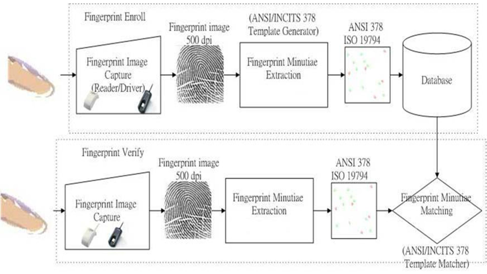
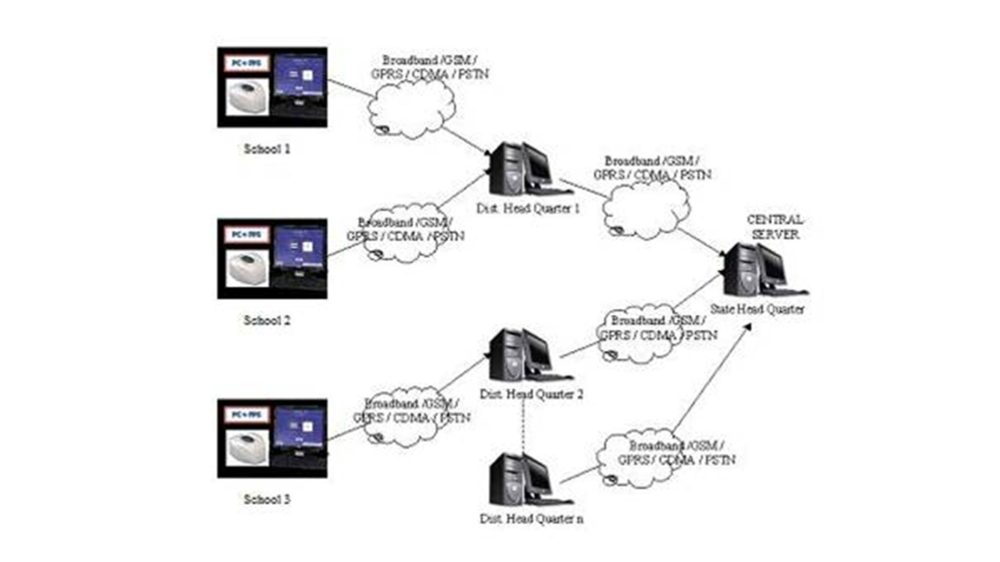
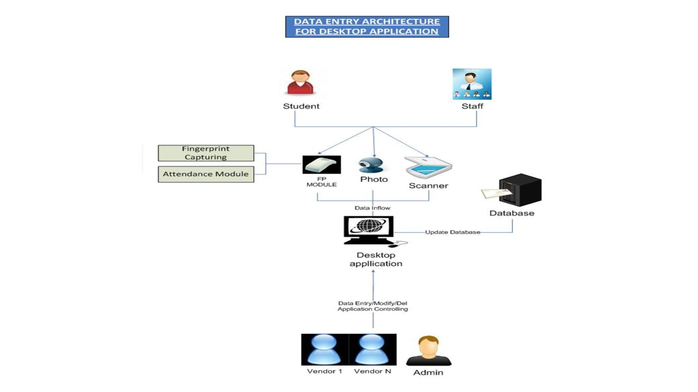
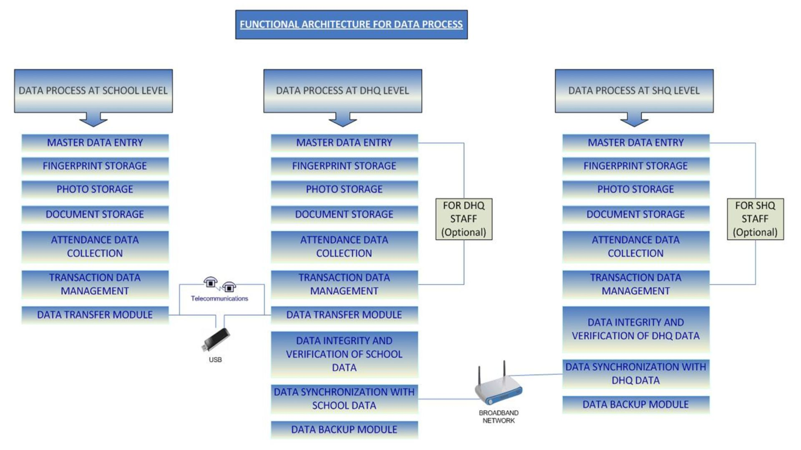
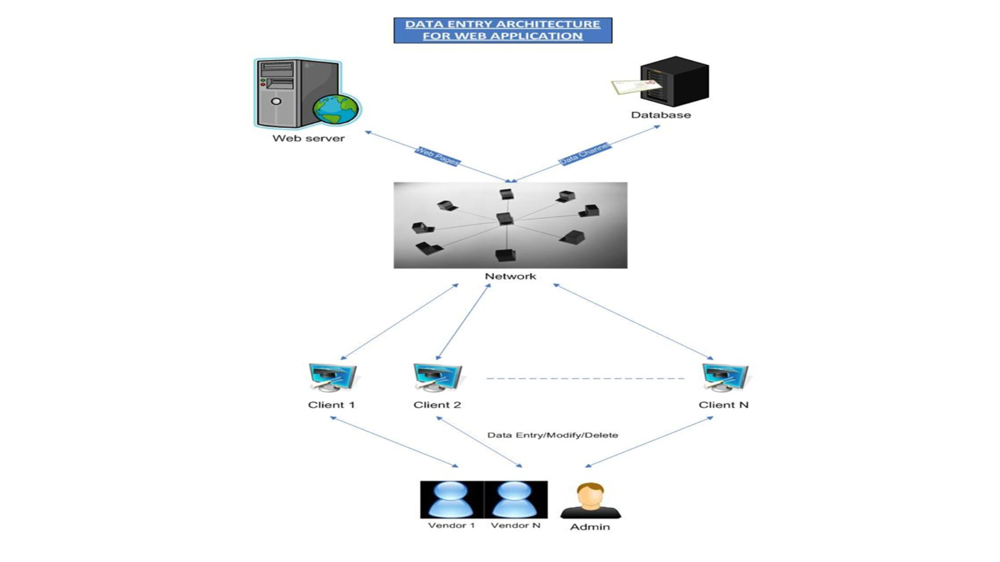
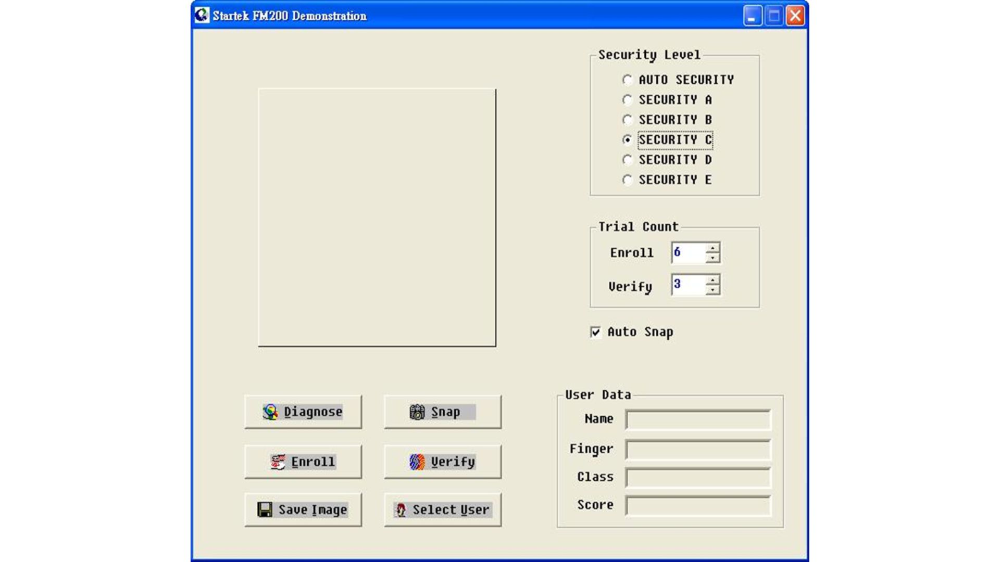
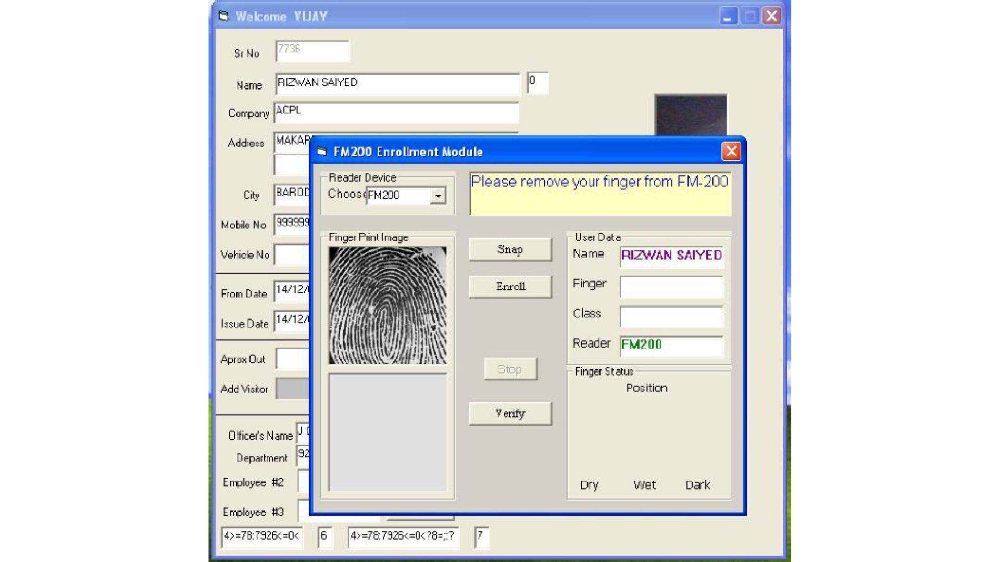
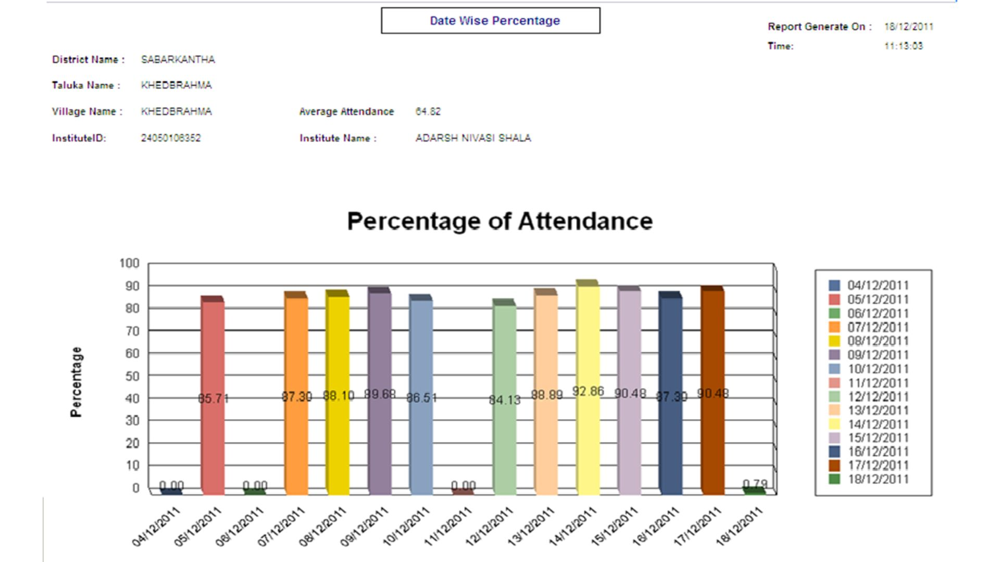
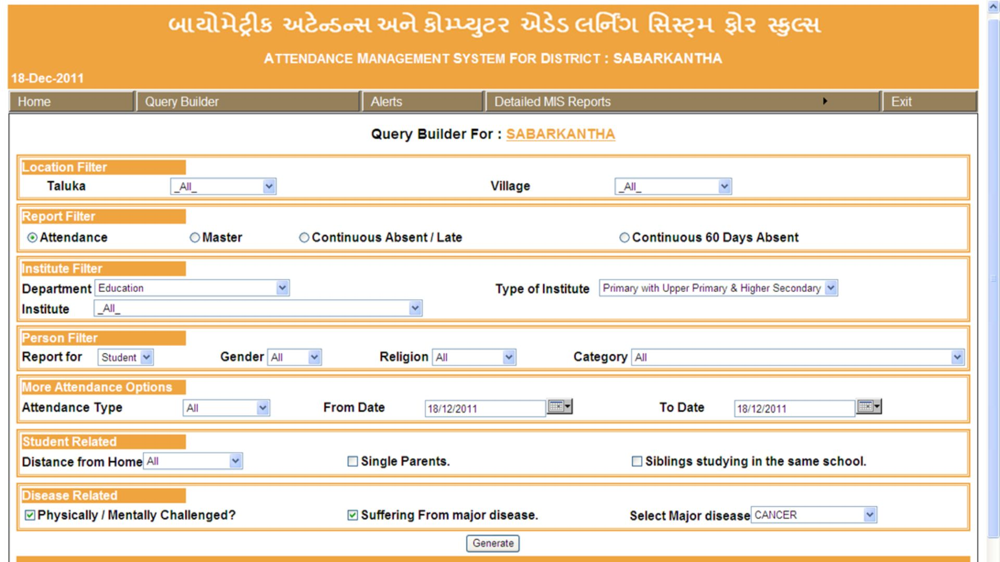

Executive Summary
For decades, tracking student attendance in government schools across Gujarat, across India
as well, relied solely on manual registers.
As expected, this system led to issues such as errors, proxies, and countless other
inefficiencies. Schools kept struggling with falsified records, time-consuming paperwork,
and a lack of real-time insights to help them improve the situation.
To solve this, ACPL worked closely with the Government of Gujarat (GoG) and introduced a
biometric attendance system that uses fingerprint authentication to ensure that only the
right student or teacher can mark their own attendance.
The system integrates seamlessly with school databases across the state, and provides
real-time data, automated reports, and complete transparency across school, district, and
state levels.
With this new system in place, the participating schools now benefit from:
- Elimination of Proxy Attendance – With biometric
verification, students and teachers can
no longer manipulate attendance records, ensuring complete accuracy.
- Real-Time Monitoring – Instant updates and analytics help
authorities track attendance
trends and address absenteeism.
- Automated Reporting – Simplifies administration, saving hours
of manual work.
- Scalability & Security – Works across thousands of schools
while protecting student
data.
This technology-driven transformation has enhanced transparency by improving staff & student
tracking and making attendance management effortless for all stakeholders.
Project Summary:
A Step by Step look at the entire project
- Step 1: Identifying the Problem – Manual
attendance was prone to proxies, errors, and
inefficiencies.
- Step 2: Designing the Solution – A biometric
system using fingerprint authentication was
proposed and implemented.
- Step 3: Developing the Technology – Secure,
scalable software was integrated with
biometric devices.
- Step 4: Deploying in Schools – Devices were
installed, and administrators, teachers, and
students were trained.
- Step 5: Ensuring Data Security – Encryption and
role-based access control protected
staff and student records and kept them secure.
- Step 6: Real-Time Monitoring & Reports –
Automated reports and dashboards provided
instant insights.
- Step 7: Overcoming Connectivity Issues – Schools
without internet used offline data
syncing to district and state HQs.
- Step 8: Delivering Measurable Impact – Proxy
attendance was eliminated, and admin
workload was significantly reduced.
- Step 9: Scaling for the Future – This system is
now a model for other education
projects.
Table of Contents
-
The Challenges of Traditional Attendance Management
- - Primary problems with the present system in place
- - The need for a better solution
-
Benefits of implementing a Biometric Attendance System
-
How we implemented a state-wide Biometric Attendance System
- - The User Flow
- - The Technology Behind the System
- - Why we decided to go with PC based Fingerprint verification
-
System Architecture & Technical Implementation
-
Security & Compliance Measures
-
The Challenges We Overcame
- - Eliminating Proxy Attendance
- - Ensuring Data Security & Privacy
- - Handling Large-Scale Data Processing
-
Training & Adoption
-
Results & Impact
- - Key Metrics & Real-Time Insights
- - Key Outcomes
-
Future Scope & Scalability
- - Integration with Existing School IT Infrastructure
- - Future Scope After Potential Enhancements
-
Conclusion
-
About Access Computech Pvt. Ltd.
The Challenges of Traditional Attendance Management
Government schools in Gujarat have traditionally recorded attendance using paper-based
registers. Here’s how the process worked:
Every morning, teachers would mark their own attendance in a common register, typically kept
in the staff room or principal’s office. They would then proceed to their classrooms and
take student attendance manually, calling out names and marking presence on paper.
At the end of the month, school administrators would compile attendance summaries for both
students and teachers and send them to district authorities for payroll processing and
student tracking.
While this system had been in place for decades, it came with several fundamental flaws: it
relied entirely on human effort and integrity, was prone to delays and inaccuracies, and
offered no real-time visibility to education officials.
Once the records left the school, verifying their accuracy became nearly impossible. This
often led to data discrepancies, administrative inefficiencies, and even deliberate
manipulation.
Primary problems with the present system in place
-
Time-Consuming & Error-Prone Process
Teachers spent a significant amount of time taking roll calls, reducing valuable
teaching hours. Human errors, such as misrecording attendance or missing entries,
were common.
-
Proxy Attendance & Fraudulent Entries
Since attendance was marked manually, students could easily fake attendance for
absent classmates. In some cases, even teachers exploited the system by manipulating
attendance records to tamper with the payroll process.
-
Lack of Real-Time Monitoring & Reporting
The data remained locked in physical registers, making it impossible for district and
state education officials to track attendance trends in real time. Monthly reports
were manually compiled, often leading to delays and inaccurate data.
-
Difficulty in Managing Large-Scale Records
With thousands of schools spread across the state, managing attendance at a large
scale became an administrative burden. Officials had no efficient way to verify the
accuracy of records without physically visiting schools.
The need for a better solution - ACPL’s Biometric Systems
To solve these challenges, the Gujarat government needed a tamper-proof, automated, and
scalable attendance tracking system. They needed a system that could ensure accuracy,
prevent proxies, and provide real-time insights to decision-makers and stakeholding
government officials.
Benefits of implementing a Biometric Attendance System
- Elimination of falsified strength (proxy)
- To study the dropout rate and make efforts to decrease it.
- True and real time count of school strength across districts within the state.
- Timely reporting of school staff.
- Computation and verification (cross check) of Mid-Day-Meal consumption with physical
attendance of students.
- Online real-time availability of reports.
- Other student details to analyse the dropout rate.
- Late coming patterns of students or staff based on distance or physical disability.
- Separate report of students with chronic ailments.
How we implemented a state-wide Biometric Attendance System
To address the inefficiencies of manual attendance, the Government of Gujarat partnered with
Access Computech Pvt. Ltd. (ACPL) to deploy a biometric attendance system across government
schools.
This solution used fingerprint authentication, ensuring that only the right individuals
could mark their attendance while also enabling real-time monitoring and automated
record-keeping.
With this system, we completely eliminated the need for manual tracking and processing,
saving countless man-hours and round trips for government officials and school
administrators alike.
The User Flow
Teachers’ Attendance:
- Each morning, teachers authenticate themselves using fingerprint scanners installed in
the staff room or principal’s office.
- Their attendance is instantly logged in the centralised system, eliminating the need for
manual registers.
Students’ Attendance:
- In classrooms, fingerprint scanners allow students to mark their attendance as they
enter.
- Students place their finger on the scanner, which matches their fingerprint against
stored data.
- The system verifies the biometric data against the school’s database and records the
timestamp. If verified, their attendance is logged instantly.

Data Processing & Storage:
- Once recorded, attendance data is securely transmitted to district and state-level
servers, where education officials can monitor reports in real time.
- Schools with limited network connectivity store the data locally and synchronise it when
a connection is available.

The Technology Behind the System
Hardware Components:
- Biometric Devices: Fingerprint scanners installed in classrooms and staff rooms (Minimum
2 devices per school up to a strength of 120 students and thereafter 1 device per every
60 students).
- Networking Infrastructure: Internet connectivity and secure data transmission between
schools and central servers.
- School IT System Integration: Minimum 1 PC with Operating System and UPS per school to
work with new/existing school databases and management systems.
Software Features:
- Biometric Application: For fingerprint enrollment, processing, matching, and storing
data-points.
- Centralised Attendance System: Real-time logging and access across multiple locations.
- Automated Reporting: District and state education officials can track attendance trends
effortlessly.
- Data Security & Encryption: Ensures student and teacher records are protected from
tampering.
Minimum Tech Infrastructure Needed at State
Headquarters:
- Enterprise class Server
- Broadband Internet with static IP
- 3000 sq ft space
- 30 working table with PC and staff
- UPS 10 KVA, with Generator backup
- Project Manager & per district 1 coordinator
Why we decided to go with PC based Fingerprint
verification
- Vast computing power & storage compared to standalone devices.
- Application based image verification with intelligence of magnification for supporting
small prints.
- Auto roll over to enhancements for small children in the age groups 4 years to 7 years.
- Limitless storage of template and data.
- MIS reports generation & printing for School self use and analyses.
- Enhanced security of data and audit trail for elimination of data tampering.
- Data safety and backup even in case of device failure. Ease of maintenance.
By implementing this secure, automated, and scalable solution, ACPL has helped
eliminate proxy attendance, reduce administrative workload, and improve the efficiency of
attendance tracking.
System Architecture & Technical Implementation
The biometric attendance system deployed across Gujarat’s government schools is built on a
secure, scalable, and interoperable architecture. It ensures seamless data flow, strong
security measures, and integration with existing IT infrastructure.
How the System Works: Data Flow from Fingerprint Scan to
Backend to Report Generation
Enrollment & Authentication
- Each student and teacher is enrolled in the system by capturing their fingerprint data,
which is securely stored in the school’s local database.
- When marking attendance, the fingerprint scanner matches the captured print with the
stored data to verify identity.

Data Transmission & Processing
- Online Mode: If a school has network connectivity, the attendance data is instantly
transmitted to district and state servers for real-time tracking.
- Offline Mode: If the school lacks stable internet, data is temporarily stored locally
and synchronised with the central server once a connection is available.

Storage & Reporting
- The attendance records are stored in a central database, accessible by authorised
personnel at school, district, and state levels.
- The system generates automated reports, highlighting trends such as absenteeism, late
arrivals, and continuous absences, allowing for swift action.

Security & Compliance Measures
Given the sensitive nature of biometric data, the system incorporates multiple layers of
security:
- End-to-End Encryption – Attendance data is encrypted both at rest and in transit to
prevent unauthorised access.
- Role-Based Access Control – Only authorised personnel can access specific attendance
records, ensuring compliance with data protection regulations.
- Tamper-Proof Logs & Audit Trails – Any modification attempts are logged, making the
system transparent and secure.
- Programmable Security settings (enrollment + verification): Programmable and flaggable,
enrollment module to flag and maintain the history of the quality of finger at the
enrollment with class of enrollment, verification feedback in score or percentage to
continuously monitor and analyse and trigger re enrollment.

Note: We would love to discuss your required security measures one-to-one, but we cannot go
further into detail about the security measures and protocols adopted in this project.
The Challenges We Overcame
Implementing a biometric attendance system at a state-wide scale came with several unique
challenges, ranging from ensuring accurate authentication to securing sensitive data and
processing large volumes of records efficiently. Here’s how our system tackled these issues:
1. Eliminating Proxy Attendance
One of the biggest flaws in manual attendance was proxy marking, where students or teachers
could manipulate records.
The biometric system completely eliminates this possibility by ensuring that attendance can
only be marked through fingerprint verification.
- Each student and teacher’s fingerprint is unique, making it impossible for someone else
to mark attendance on their behalf.
- Instant authentication ensures attendance is captured in real time, preventing backdated
or fraudulent entries.
- Integration with school and district databases allows administrators to verify records
at any time.

2. Ensuring Data Security & Privacy
With thousands of student and teacher records being stored and transmitted daily, the system
prioritises data security and privacy through multiple protective measures to prevent
unauthorised access and misuse of data.
- End-to-End Encryption – All fingerprint data is encrypted before transmission, ensuring
that even if intercepted, it cannot be misused.
- Role-Based Access Control – Only authorised personnel can access specific data,
minimising the risk of manipulation.
- Tamper-Proof Audit Logs – Every action is logged, making it easy to track and prevent
unauthorised modifications.
3. Handling Large-Scale Data Processing
With thousands of schools generating attendance records every day, the system was designed
to be scalable, efficient, and adaptable to different connectivity conditions.
- Hybrid Data Storage – Schools with a stable internet connection sync attendance records
in real time, while those in remote areas store data locally and sync periodically.
- Cloud & On-Premise Solutions – A centralised cloud-based database ensures data is always
accessible, while local backups provide redundancy in case of network failures.
- Automated Reporting – Attendance reports are generated on demand, significantly reducing
the administrative workload for teachers and school officials.
By solving these key challenges, our biometric attendance system has transformed
attendance tracking into a secure, reliable, and scalable process for Gujarat’s government
schools.
Training & Adoption: Making the System Work for Everyone
A new technology is only effective if the people using it feel confident and comfortable.
To ensure smooth adoption, ACPL designed a structured training programme for teachers,
students, and school administrators.
Training for Different Stakeholders
For Teachers & School Admins:
- Hands-on sessions on how to operate biometric scanners and access attendance reports.
- Guidelines on troubleshooting common issues, such as incorrect fingerprint recognition.
- Training on data security best practices to prevent unauthorised system access.
For Students:
- Simple demonstrations on how to use fingerprint scanners during attendance marking.
- Awareness sessions on why biometric attendance is important and how it benefits them.
For District & State Officials:
- Training on centralised attendance dashboards for real-time monitoring.
- Workshops on how to use reports for policy decisions and resource allocation.

A detailed diagram of the various training programs carried out to familiarise all
stakeholders with our new and improved system for attendance recording.
Overcoming Resistance to Change
Some teachers and administrators were hesitant about switching from manual registers to
digital attendance. But our training programmes addressed these concerns by:
- Highlighting the benefits – Reduced paperwork, automatic reports, and better efficiency.
- Providing hands-on experience – Live demonstrations and one-on-one support built
confidence.
- Offering continuous support – A dedicated helpdesk ensured quick resolution of technical
queries.
By empowering our end-users with the right knowledge and support, ACPL ensured
that the biometric attendance system was adopted successfully and integrated smoothly into
daily school operations.
Results & Impact
The implementation of the biometric attendance system across Gujarat’s government schools
has led to significant improvements in accuracy, efficiency, and accountability. And not
only that, with improved systems, now the staff is able to make better use of the time they
earlier spent after repetitive manual tasks.
Key Metrics & Real-Time Insights
The biometric attendance system provides comprehensive dashboards and real-time analytics,
enabling district and state authorities to monitor attendance trends and take immediate
action.
District HQ Dashboard:
Offers a district-wise classification of all schools, displaying key metrics at a single
glance.

Automated Alerts & Reports:
- Student absence for 7+ days – Identifies long-term absenteeism for early intervention.
- Staff absence for 5+ days – Flags continuous staff absence to ensure accountability.
- Staff continuously arriving late – Helps track late arrivals and trends.
- Delayed Data Transfers – Flags schools that have not transferred data for 2, 5, or 10
days, ensuring records remain up to date.
- Custom Reports with Query Builder – Allows administrators to generate reports based on
specific attendance patterns and anomalies.

Centralised Alert Monitoring:
A dedicated Alerts Dashboard consolidates
all attendance alerts in one place, making it easy for officials to track and respond.
School Performance Analytics:
- Last 15 Days Summary – Displays average attendance trends and daily attendance
percentages, offering insights into weekly attendance patterns.

- Multiple Query Dashboards – Enables officials to filter and analyse data for deeper
reporting and decision-making.

- Detailed Student Reports – Provides a comprehensive record of individual student
attendance history.

Key Outcomes
- Higher Accuracy in Attendance Records:
- Eliminated manual errors and ensured ~100% accuracy in attendance tracking.
- Provided real-time, tamper-proof records for students and teachers.
- Enabled instant verification for district and state officials.
- Reduction in Fraudulent Attendance:
- Proxy attendance is now impossible, as only authorised fingerprints can mark
attendance.
- Prevented backdated or manipulated entries, ensuring integrity in school
operations.
- Increased accountability among teachers and students, leading to improved
attendance rates.
- Improved Administrative Efficiency:
- Automated reporting reduced the workload for teachers and administrators.
- Schools no longer need to manually compile attendance records, saving hours of
effort.
- District and state education officials can now track attendance trends in real
time, enabling better policymaking.
The success of this system has set a benchmark for digital transformation in
education management, making attendance tracking simpler, faster, and more reliable.
Future Scope & Scalability
The biometric attendance system is built for long-term scalability and can be enhanced with
advanced features to further improve efficiency and expand its applications.
Integration with Existing School IT Infrastructure
- Designed for Large-Scale Use – The system efficiently handles thousands of schools,
processing high volumes of attendance data without performance issues.
- Interoperability with Existing Systems – The biometric solution is designed to integrate
seamlessly with school management software, payroll systems, and government databases.
- Modular & Future-Proof – The architecture supports future upgrades, including AI-based
analytics, RFID attendance tracking, and facial recognition enhancements.
Future Scope After Potential Enhancements
- AI Integration for Predictive Analytics
- Using AI to analyse attendance trends and predict dropout risks.
- Identifying patterns in absenteeism to intervene early and improve student
retention.
- Integration with Student Information Systems
- Linking attendance records with academic performance and government welfare
schemes.
- Enabling automated alerts for students with frequent absences.
- Statewide & Nationwide Expansion
- The system is already handling thousands of schools, making it scalable for
wider implementation.
- Future versions can integrate multi-modal biometrics (e.g., facial recognition,
RFID tracking) for added security.
Conclusion
The biometric attendance system has transformed how government schools in Gujarat track
attendance, bringing unparalleled accuracy, security, and efficiency to the process.
By eliminating fraud, automating reporting, and enabling real-time monitoring, this solution
has set a new standard in education management for Indian schools.
Next Steps: Bringing This Innovation to More Schools
This project has demonstrated that biometric technology can revolutionise attendance
tracking. Now, it's time to scale this success further.
Here’s what we’re working towards next, helping all relevant stakeholders of
this project maximise the reach and effectiveness of a project well-executed.
- For Government Officials – Implement this system in more schools to improve student
tracking and policy effectiveness.
- For System Integrators & Tech Partners – Explore how this secure, scalable solution can
integrate with existing education platforms.
- For Educational Institutions – Adopt biometric attendance to streamline administration
and enhance operational efficiency.
To learn more about how this solution can be implemented for you at scale, contact us today.
- Website: accesscomputech.com
- Email: support@acpl.ind.in
- Phone: +91 265-263 3307 / +91 265-6110 900
- Address: Access Computech Pvt. Ltd. 504/6, G.I.D.C. Makarpura, Vadodara-390010. Gujarat,
INDIA.
About Access Computech Pvt. Ltd.
At Access Computech, we’ve been delivering dependable, customised solutions for over 30
years, specialising in Point-of-Sale Machines and Personalised Identification Systems. From
Attendance Recording and Access Control to Visitor Management, we create tailored systems
that fit our clients’ unique needs.
Our tailored systems have enhanced efficiency across industries such as petrochemicals,
refineries, steel, mining, power, electronics, and textiles.
With a passionate team and offices across the country, we stay ahead of the curve by
adopting emerging technologies to deliver the latest, most reliable, high-quality solutions
for our clients.
Our mission is simple: To consistently meet and exceed the expectations of our clients by
adhering to the highest industry standards.
Our Certifications & Accreditations: Certified for excellence with ISO 9001, ISO 14000, ISO
27001, and CMM Level 3, we uphold industry-leading standards in every aspect of our
business.